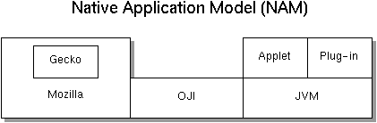
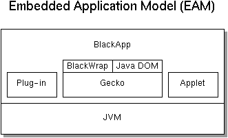

|
|
Project Blackwood:
Integration of the Java Platform with Mozilla
by George Drapeau <drapeau@eng.sun.com>
Introduction
The blackwood project has two primary goals:
- Better integrate the Java platform with Mozilla so developers can extend
the browser with components and plug-ins written in the Java programming
language.
- Make sure that Mozilla's layout engine can be embedded in applications
running on a Java virtual machine (JVM).
The leitmotif for this project is:
- HTML, XML and its derivatives provide for mobile data -- content, JavaScript
and Java provide for mobile code -- behavior. The browser enables presentation
of, and interaction with, aggregations of content and behavior -- dynamic
documents. Make this a reality.
The sections that follow describe a set of facilities to better integrate
the Java platform with Mozilla. The first provides a foundation, the rest
fall into either of two blackwood project categories as listed below. The
first category enumerates the facilities supporting the Native Application
Model (NAM), in which the JVM is considered an auxiliary service that extends
a native browser application, e.g. Communicator 5.0. The second category consists
of facilities supporting the Embedded Application Model (EAM), where Mozilla's
layout engine, Gecko, is embedded as a component in a Java application and
hosted on a JVM. A third section contains a summary of concerns that need
to be addressed on a case by case basis when implementing each facility.
BlackConnect: Java Bridge to XPCOM
The design of the new layout engine is based on a COM-compatible cross-platform
component object model called XPCOM. It follows that
Mozilla components are scriptable because their public APIs are defined in
XPIDL, a cross-platform interface
definition language. Component methods may be invoked from any language for
which there exists a binding to the corresponding XPCOM interface. In Mozilla,
the primary language supported is JavaScript, and the binding to XPCOM components
is provided by a facility called XPConnect.
XPConnect allows for the dynamic binding of JavaScript to XPCOM components
at runtime. The Java Bridge to XPCOM provides the equivalent
binding for the Java programming language, so other facilities and extensions
can be implemented in Java. An initial implementation will focus on mechanisms
required to access Gecko's content model and enabling plug-in development
in Java. A more detailed analysis of the different types of binding mechanisms
should lead to a refined implementation over time.
Facilities supporting the Native Application Model
The native application model, as depicted in the diagram below, assumes the
Java virtual machine is an external, optional service. If a compatible JVM
is available, the browser can activate and launch Java programs when it encounters
Java byte-code in downloaded content.

Open JVM Integration
The Open JVM Integration (OJI) facility allows Mozilla to work with different
Java virtual machines. Regardless of JVM vendor or version, if the virtual
machine implements the required Open JVM Plug-in API, it can communicate
with the Mozilla browser. When the browser encounters Java byte code, e.g.
an applet, it loads it into the JVM for execution through this API. The
Open JVM Plug-in API is derived from the Netscape Plug-in API and makes
heavy use of the Java Native Interface (JNI) to drive the JVM.
LiveConnect, which provides JavaScript to Java connectivity, is another
feature supported by OJI. Using LiveConnect, a JavaScript script can invoke
methods in an applet, and applet code can call into a JavaScript object.
This mechanism facilitates the discovery of browser configuration data and
preferences when programming applets. An applet can, for example, access
the properties of a JavaScript Window object.
OJI is a high priority for the Blackwood team and will be supported on
Windows, MacOS, Linux and Solaris, as it enables the development of plug-ins
that run on the Java platform. This facility is described in the next subsection.
Pluglets: Plug-ins for the Java Platform
Plug-ins are a general mechanism for extending the functionality of the
Mozilla browser. Most plug-ins are written to handle a specific type of
content on a single platform, e.g. RealPlayer for Windows to play audio
and video streams. Many plug-ins exist only on the Windows platform. Pluglets,
which are plug-ins written in Java, can alleviate this imbalance because
they facilitate the development of cross-platform extensions. As long as
Mozilla has access to a JVM through OJI, it can activate and launch pluglets.
Pluglets are not only platform agnostic, but also mobile. Thus, a lightweight
pluglet could be downloaded transparently with the content it handles.
Facilities Supporting the Embedded Application Model
Unlike the native application model, the embedded application model requires
a Java virtual machine. Applications written in the Java programming language
embed Mozilla's layout engine as a component for presenting, and interacting
with, dynamic documents. Note, that pluglets and applets will also work in
this model.

Java DOM API
In order to access the layout engine's content model from a Java program,
an implementation of the Java DOM API is required. This
implementation consists of an intermediate JNI layer that maps Java DOM
methods onto those Mozilla provides. The implementation of this Java DOM
translation layer may rely on the mechanisms provided by the Java Bridge
to XPCOM when the native DOM API makes use of XPIDL.
Access to Mozilla's content model through the Java DOM API opens up a whole
new world of opportunities for components programed in the Java language.
But it also creates a conduit that needs to be scrutinized and checked with
regard to security. Concurrent access to the content model is another concern
for which a policy is required, as the layout engine assumes a single thread
of control.
Java Wrapper API for Gecko WebShell (BlackWrap)
Embedding the Gecko layout engine in an application hosted on a Java virtual
machine requires a Java Wrapper API for Gecko. This wrapper consists of
high-level interfaces that encapsulate the functionality of Gecko's layout
engine and present it to the developer as a JavaBeans component. This component,
referred to as the BlackWrap component, may replace similar browser beans
that have been integrated into custom applications in use today.
The Java Wrapper API defines a set of interfaces that may be implemented
by any HTML/XML presentation engine. Two sets of interfaces exist depending
on the capabilities of the implementation. The first consists of a core
set of interfaces defining minimal functionality required by all implementations.
The second includes interfaces to extensions that are optional and may not
be available due to restrictions like memory footprint. This two-tiered
approach allows for a single core API to be used across many different browser
beans and makes it easy for developers to exchange the bean and reuse application-specific
code that depends on the core API. The Java Wrapper API includes a specification
on how optional capabilities can be discovered by a client at runtime so
that other components may be able to query whether a service is available.
Further documentation about the java wrapper API is available at
http://www.mozilla.org/projects/blackwood/webclient/.
Java Browser Application (BlackApp)
The Blackwood team will build a Java Browser application (code-name BlackApp)
in order to test and demonstrate the Java Wrapper API for Gecko. This browser
may evolve into a full-fledged product over time, but the immediate goal
is to provide a testing framework for the Embedded Application Model where
Mozilla's layout engine is embedded in a Java application. Many application-level
services like preferences, bookmarks and history, and parts of the user
interface can be written in the Java programming language. Interaction with
the embedded layout engine will occur through the facilities described above.
Furthermore, BlackApp should demonstrate that applets and pluglets also
work in the Embedded Application Model.
These are a collection of handy classes for developing
applications in Java. Classes include Assert, Log,
ParameterCheck, etc. More information on the utility classes is
available at http://www.mozilla.org/projects/blackwood/java-util/.
Implementation Concerns
Security
Security concerns arise in any application that allows code to be downloaded
from the network and executed dynamically. This capability requires mechanisms
for checking where the executable originates from, whether the source is
trusted, and whether the user allows for foreign code to access certain
resources on the client. The Java platform implements a security model that
provides these mechanisms. The embedded application model can make direct
use of this security model to protect the client from malicious applets
and pluglets.
In the native application model, Java byte code can be treated much like
JavaScript scripts. Thus, the same mechanisms that Mozilla uses to enforce
access permissions and check the trustworthiness of scripts can be applied
to applets and pluglets when they invoke native methods. The required interfaces
will be implemented as part of the OJI facility.
Memory Management
The life-cycle of native objects in the Mozilla browser is managed through
a reference counting protocol. Objects instantiated in a JVM, on the other
hand, are reclaimed by a garbage collector when they become unreachable.
Most of the facilities that make use of JNI will need to synchronize memory
management across the language boundary. Once object ownership is clearly
understood and specified, implementation should be straightforward, given
the features like weak references and finalizers that the Java platform
provides.
Concurrency
Concurrency is of special concern to users of the Java DOM API for Gecko.
Due to the single-threaded application model employed by Gecko, access to
the content model is not thread-safe. This is not a problem for components
implementing listener interfaces which are always invoked by the layout
engine's main thread. But it may be a problem for components like pluglets
and applets which want to access the document, i.e. the container in which
they are embedded, from another thread. Depending on the type of access
(read-only, read-write) and the elements addressed within the document,
there may or may not be a risk of interfering with another thread. Even
if the latter scenario is rare, the developer needs to be aware of it. The
Java DOM API implementation does not protect Gecko's content model from
concurrent access. OJI, on the other hand, will provide for thread synchronization
between applets, plugins and the layout engine.
Other modules within Mozilla like Necko (networking and protocol handling)
employ multiple threads. For these modules, concurrency and compatibility
needs to be further examined in the context of the embedded application
model.
Appendix
Templates
We offer here the templates used for
blackwood project development.
|